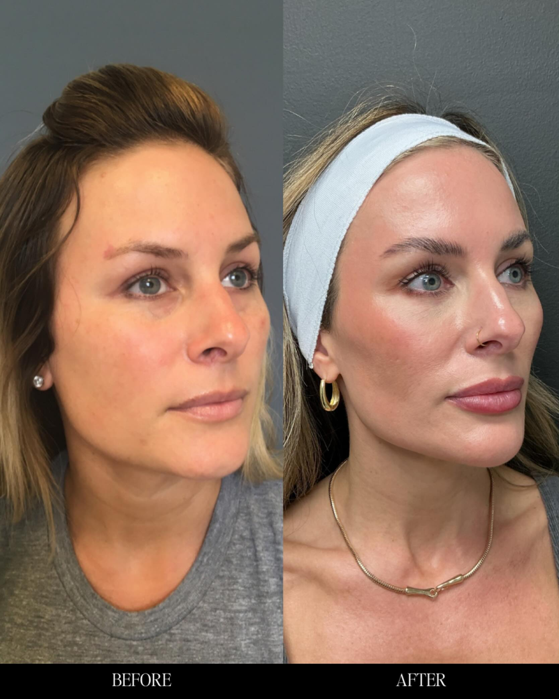
Your Discovery Call
Tell us about yourself. What bothers you? What do you want to change? This is a no-pressure conversation where we listen and learn about your goals.
Juvly Aesthetics
You want to look younger and more confident. You don't want to look like you've had work done. Our medical team is here to guide you to subtle, natural-looking results that enhance your unique beauty.
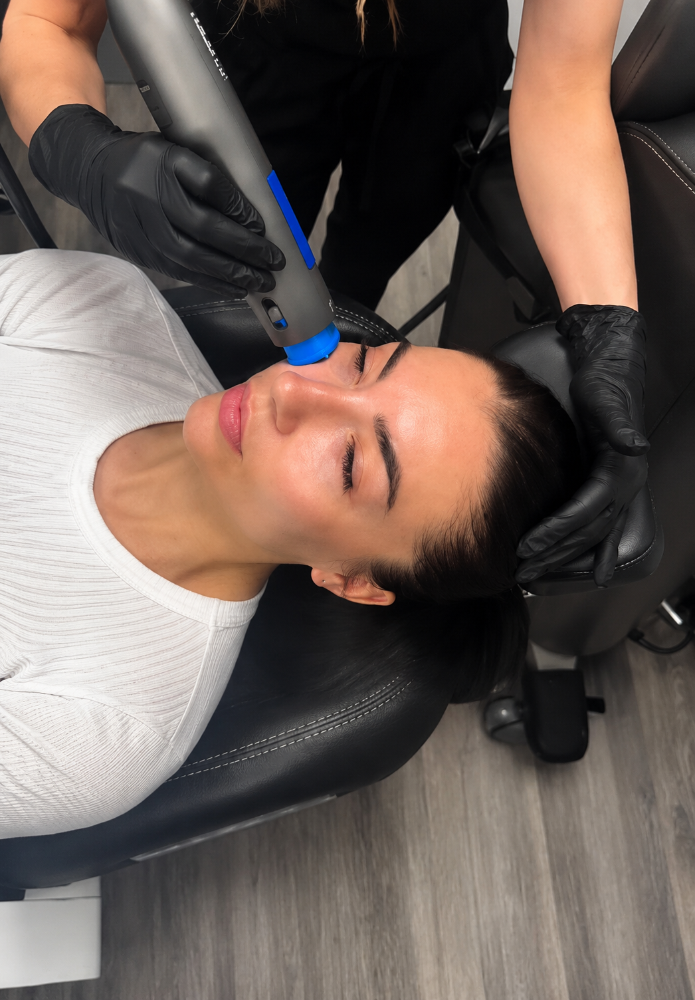
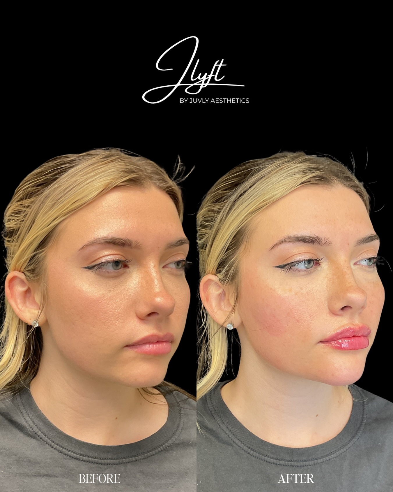
The question that keeps stopping you
You’ve seen the before-and-afters. You’ve read the reviews. You’ve even thought about booking a consultation. But that one nagging question keeps stopping you: “What if I look overdone?”
You’re not alone. The medical aesthetics world can be tricky and sometimes scary to navigate on your own. You may feel like you want to explore your options, but you’re just not sure who to trust or where to go.
That stops today.
Problem / solution
You know the feeling. You look in the mirror and see a tired version of yourself. The lines are a little deeper. The volume is a little less. You want to do something about it, but the thought of walking into a med spa is intimidating.
That’s the problem. The solution isn’t a single treatment. It’s a partner.
At Juvly Aesthetics, we believe you shouldn’t have to choose between looking younger and looking like yourself. Our entire approach is built on one principle: natural-looking enhancement. Our medical team doesn’t just perform procedures; they personally recommend a plan based on your individual needs, your facial structure, and your goals.
We’re not here to sell you a service. We’re here to guide you to a version of yourself that feels more confident, refreshed, and authentically you.
Steps to success
We’ve removed the guesswork and the fear. Here’s how we help you achieve your goals:

Tell us about yourself. What bothers you? What do you want to change? This is a no-pressure conversation where we listen and learn about your goals.

Based on our conversation, your provider will curate a treatment plan just for you. We’ll explain the options, the expected results, and answer every single question you have.
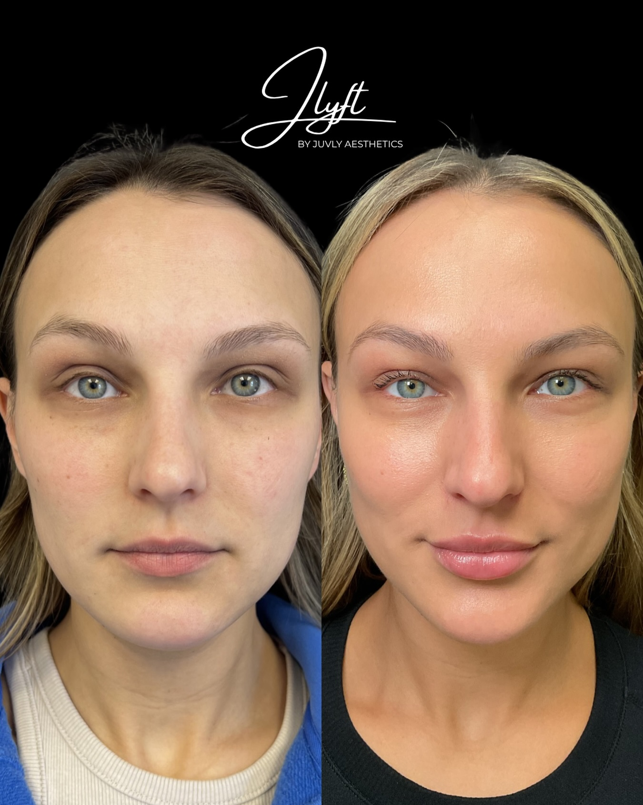
Experience the Juvly difference. You’ll leave feeling informed, cared for, and looking like a refreshed, more confident version of yourself. Subtle, smooth, and never overdone.
Real people. Real results.
Believable, natural-looking outcomes are the point. These proof images are presented with face-safe framing and natural proportions.
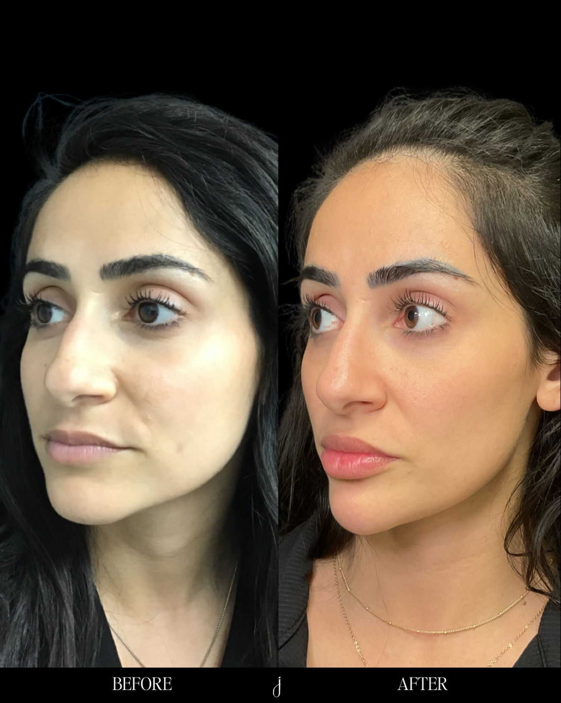
Featured proof
Our results are meant to read as refreshed, smooth, and believable — not overdone, not heavy, and never masked.
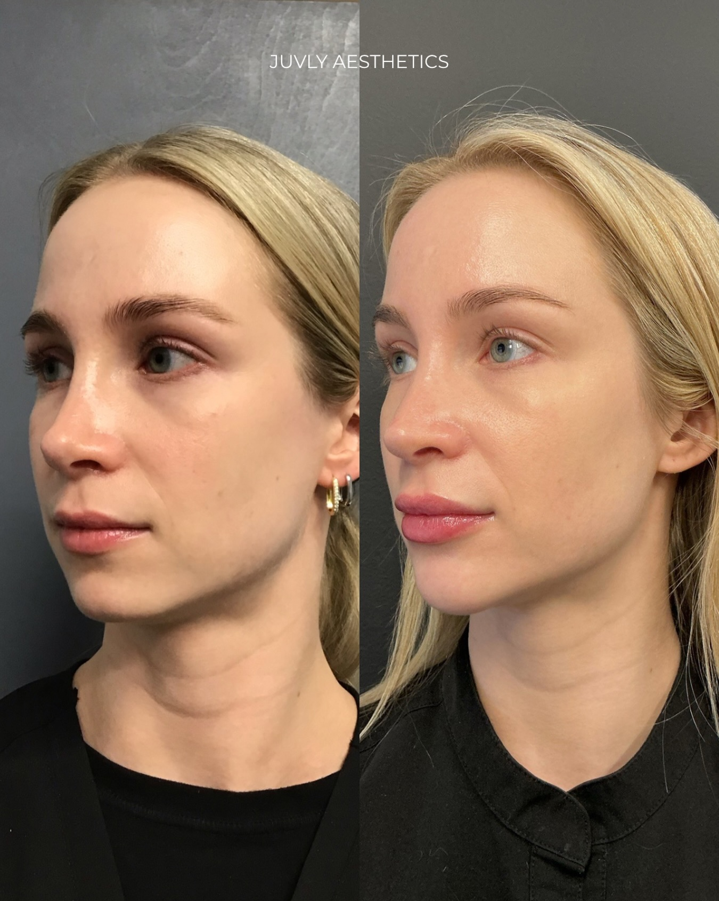
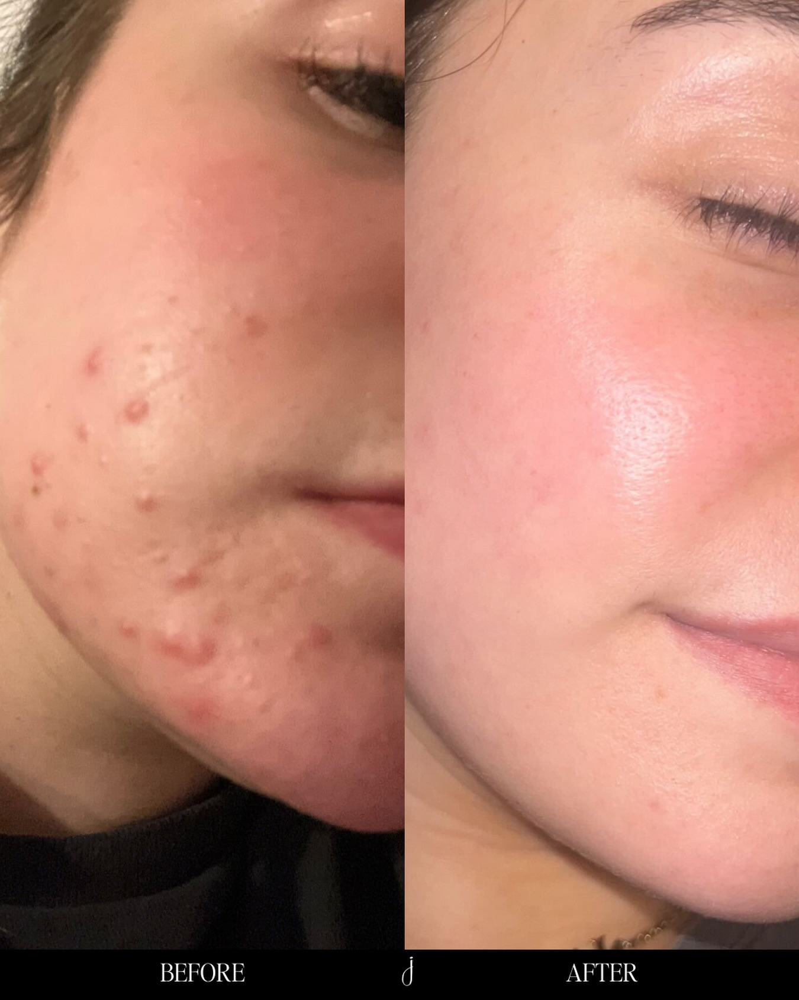
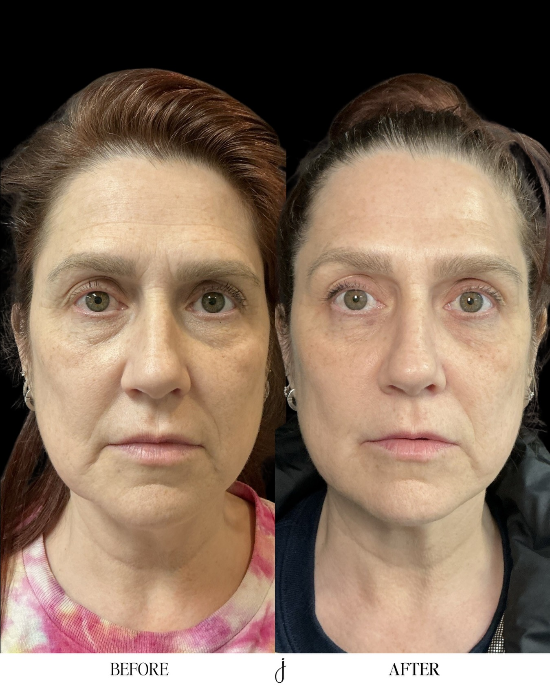
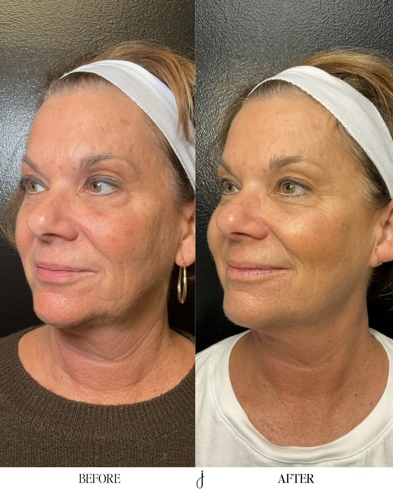
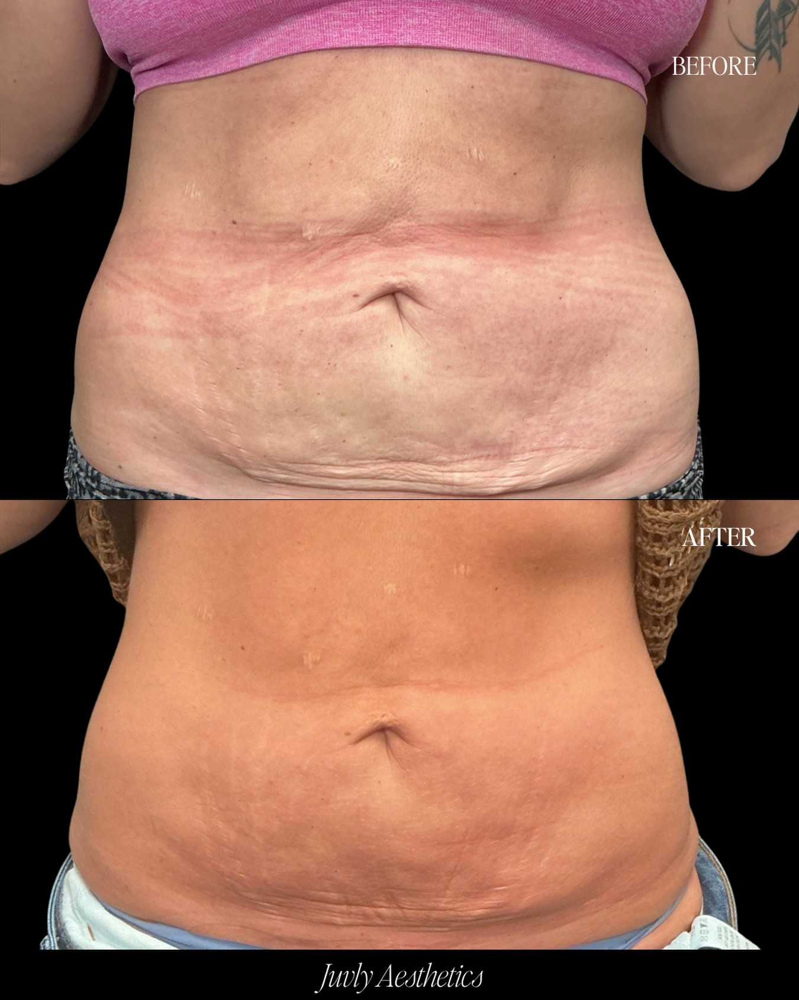
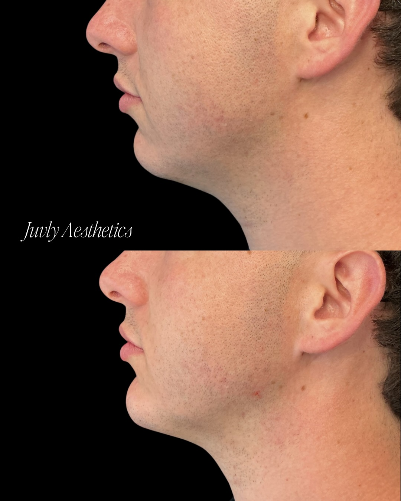
“I was so nervous for my first appointment. I didn't want to look 'done.' The team at Juvly listened to my fears and created a plan that was so subtle, my friends just said I looked 'well-rested.' I’m finally a member and I’ve never felt more confident.”
— Sarah M., Columbus“I’ve been to other med spas, but Juvly is different. The level of care and the natural results are unmatched. Plus, the membership is a no-brainer. I’m banking my payments and saving on every treatment.”
— Jessica L., Polaris“I came for the weight loss program, but I stayed for the whole experience. The medical team is incredible. They helped me understand my options and created a plan that actually works.”
— David R., DallasWhat’s included
When you choose Juvly, you’re not just booking an appointment. You’re gaining access to a complete ecosystem designed to help you look and feel your best.
Not a sales pitch. A real conversation with a medical professional who will listen and create a plan for you.
From our signature JLyft to Dysport, Restylane, Sculptra, and more. We use only the best.
Our providers are experts in medical aesthetics. You’re in safe, skilled hands.
The smartest way to invest in yourself. 100% of your monthly fee goes towards the services you want. You can bank your payments for up to 12 months and save over 20% on treatments.
Join a community of people who are investing in themselves. Get priority booking, access to private VIP events, and exclusive member pricing.
Treat now, pay later with Cherry and PatientFi. We make it easy to say yes to yourself.
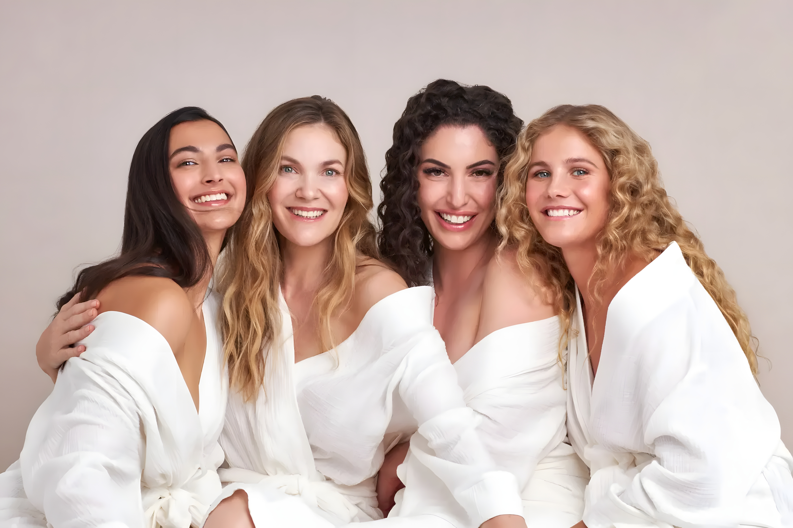
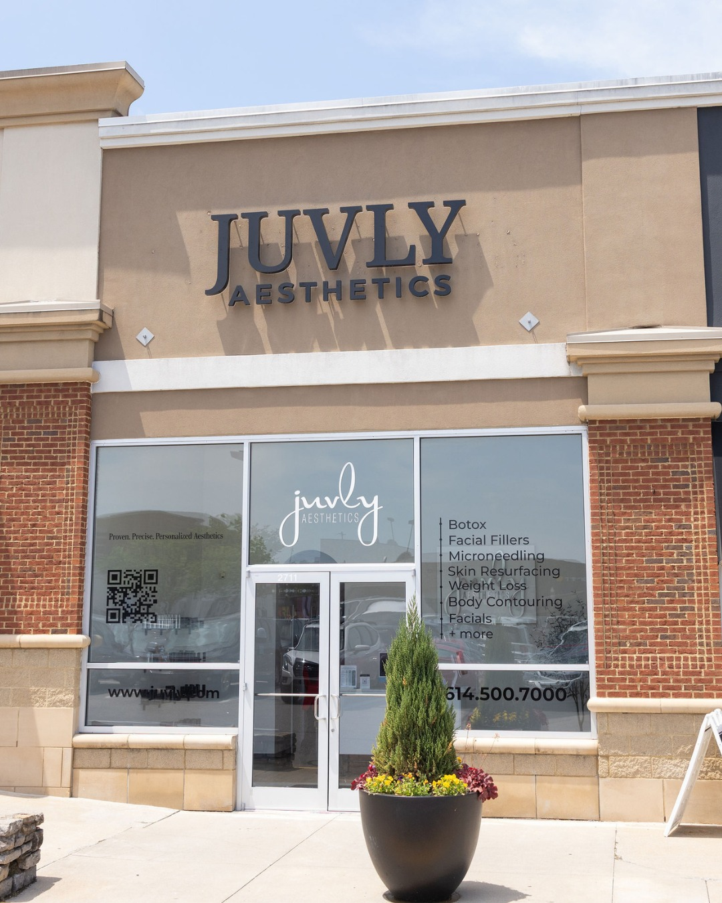
About Juvly
We started Juvly because we saw a gap in the market. There were med spas that promised dramatic results, and there were clinical environments that felt cold and impersonal. We wanted to create something different.
We built a place where medical expertise meets artistic vision. A place where you can get a medically-supervised weight loss program and a subtle lip enhancement in the same visit. A place where the goal isn't to change who you are, but to help you become the most confident version of yourself.
With 11 locations across the country, our team of medical professionals is dedicated to one thing: helping you look amazing, but not overly done. We’ve helped thousands of people just like you navigate their journey, and we’d be honored to help you, too.
Featured treatments
Every treatment category is positioned as part of a personalized plan, not a one-size-fits-all menu.

For guests who want thoughtful support beyond facial rejuvenation, mapped into a plan that fits their goals.
A non-surgical facelift approach designed around refreshed contours, not a dramatic change.
Premium branded treatments chosen conservatively and explained clearly before you begin.
Medical-grade options to support texture, tone, and confidence over time.
Subtle, smooth, and guided by your facial structure so you still look like yourself.
Is Juvly right for you?
Honest positioning
FAQ
You don’t need to know the treatment before you call. That’s what the consultation is for.
Call with a questionWe hear this every day. Our providers are experts in creating subtle, natural-looking results. We use techniques to minimize discomfort, and we always start conservatively. You can see our commitment to "not overdone" results in our gallery.
You don’t have to know. That’s what our consultation is for. We’ll listen to your goals, assess your needs, and recommend a personalized plan. We’ll never push a treatment that isn’t right for you.
Absolutely. Think of it as a smart way to budget for your self-care. 100% of your monthly fee goes toward treatments. You save over 20% on wrinkle relaxers, 20% on laser, and up to $700 on certain packages. Plus, you get priority booking and VIP access.
We are committed to your satisfaction. Our consultative approach is designed to ensure we are aligned on your goals before any treatment begins. We’ll be with you every step of the way.
It’s simple. Click the button below to schedule your free, no-obligation consultation. Tell us a little about yourself, and we’ll take it from there.
Clinic / location
Juvly’s scale supports the same reassurance repeated throughout the page: medically-guided care, warm consultation, and results that feel like you.
Ready to begin?
You’ve done the research. You’ve read the stories. You know what you want. The only question left is: Will you take the first step toward a more confident you?
Yes, Start My Journey